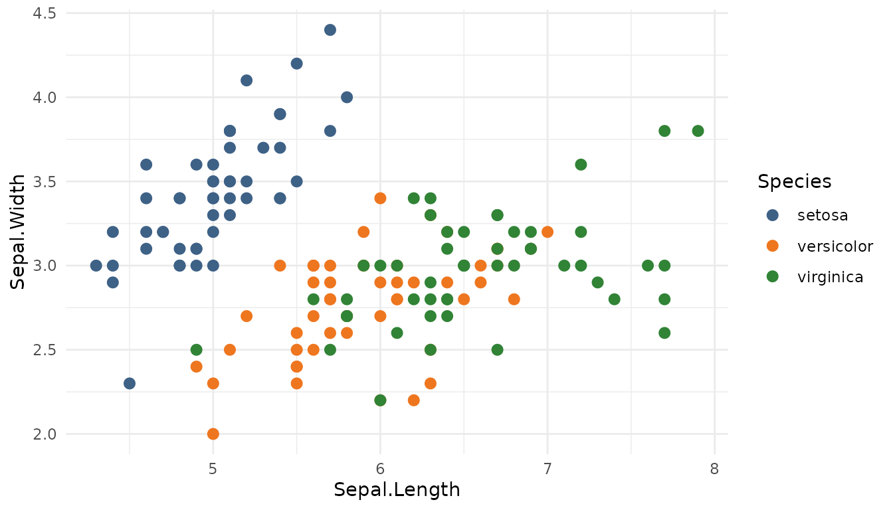
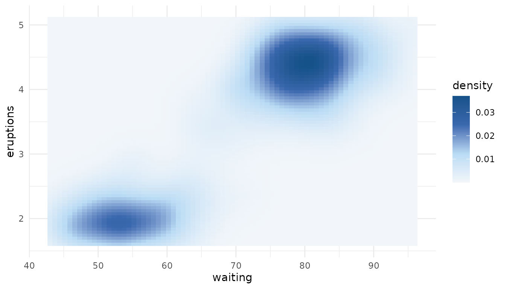

biopalette includes a curated palette collection, but the same tools can read and manage a collection owned by a project, laboratory, or organization. A custom collection is useful when colors carry stable meaning across several figures or analyses and should be stored, reviewed, and reused like other project data.
This vignette covers the complete lifecycle of such a collection. For
the bundled palettes and plotting scales, begin with
vignette("get-started", package = "biopalette").
Collection structure
A collection is a directory with up to three type subdirectories:
palettes/
├── qualitative/
├── sequential/
└── diverging/Each palette is one JSON file. There is no compiled copy or secondary data format. A minimal file contains a name, a type, and a vector of HEX colors:
The file name must match name, and its parent directory
must match type. Palette names are unique across the entire
collection, so a name cannot refer to different palettes under different
types.
Choose the type from the meaning of the colors:
-
qualitativefor unordered categories; -
sequentialfor an ordered low-to-high ramp; -
divergingfor two directions around a meaningful center.
Create a collection
For this example, create an isolated temporary directory. In a real
project, use a stable path such as config/palettes or
assets/palettes and commit the JSON files to version
control.
palettes_dir <- tempfile("biopalette-palettes-")create_palette() creates the required type directory and
writes a validated JSON file:
create_palette(
name = "treatment_groups",
type = "qualitative",
colors = c("#3E6186", "#EE761F", "#318336"),
palettes_dir = palettes_dir
)
#> ✔ Palette saved: /tmp/RtmppsPEjo/biopalette-palettes-1cdf7d443ce4/qualitative/treatment_groups.json
create_palette(
name = "response_blue",
type = "sequential",
colors = c("#F2F6FA", "#B9DBF4", "#3A68AE", "#155289"),
palettes_dir = palettes_dir
)
#> ✔ Palette saved: /tmp/RtmppsPEjo/biopalette-palettes-1cdf7d443ce4/sequential/response_blue.json
create_palette(
name = "effect_balance",
type = "diverging",
colors = c("#1991A9", "#A3C5C4", "#E7E9E4", "#D7AD85", "#A65C31"),
palettes_dir = palettes_dir
)
#> ✔ Palette saved: /tmp/RtmppsPEjo/biopalette-palettes-1cdf7d443ce4/diverging/effect_balance.jsonpalettes_dir is required for every write. This is
deliberate: package data cannot be modified accidentally, and a write
always has an explicit owner and destination.
Inspect and use the collection
Pass the same directory to any palette-reading function:
list_palettes(palettes_dir = palettes_dir)[c("name", "type", "n_color")]
#> name type n_color
#> 1 effect_balance diverging 5
#> 2 treatment_groups qualitative 3
#> 3 response_blue sequential 4
palette_info("response_blue", palettes_dir = palettes_dir)
#> name type n_color colors
#> 1 response_blue sequential 4 #F2F6FA,....
get_palette("treatment_groups", palettes_dir = palettes_dir)
#> [1] "#3E6186" "#EE761F" "#318336"Custom palettes follow exactly the same type-aware n
rules as bundled ones. A qualitative palette returns its first
n category colors, while sequential and diverging palettes
sample the complete ramp:
get_palette("treatment_groups", n = 2, palettes_dir = palettes_dir)
#> [1] "#3E6186" "#EE761F"
get_palette("response_blue", n = 7, palettes_dir = palettes_dir)
#> [1] "#F2F6FA" "#D6E8F7" "#B9DBF4" "#7D9FD1" "#3A68AE" "#295D9B" "#155289"They also work directly in ggplot2 scales:
library(ggplot2)
ggplot(iris, aes(Sepal.Length, Sepal.Width, color = Species)) +
geom_point(size = 2.5) +
scale_color_biopalette(
"treatment_groups",
palettes_dir = palettes_dir
) +
theme_minimal()
ggplot(faithfuld, aes(waiting, eruptions, fill = density)) +
geom_raster() +
scale_fill_biopalette_gradient(
"response_blue",
palettes_dir = palettes_dir
) +
theme_minimal()
The bundled and custom collections remain separate. Omitting
palettes_dir always selects the palettes installed with
biopalette; supplying it selects only that custom collection. The two
collections are not merged implicitly.
Update a palette safely
Existing files are protected from accidental replacement:
create_palette(
"response_blue",
"sequential",
c("#EFF5FB", "#9ECAE1", "#3182BD"),
palettes_dir = palettes_dir
)
#> Error:
#> ! Palette "response_blue" already exists. Use `overwrite = TRUE` to
#> replace.Use overwrite = TRUE only when replacement is
intentional:
create_palette(
"response_blue",
"sequential",
c("#EFF5FB", "#9ECAE1", "#3182BD"),
palettes_dir = palettes_dir,
overwrite = TRUE
)
#> ℹ Overwriting existing palette: "response_blue"
#> ✔ Palette saved: /tmp/RtmppsPEjo/biopalette-palettes-1cdf7d443ce4/sequential/response_blue.json
get_palette("response_blue", palettes_dir = palettes_dir)
#> [1] "#EFF5FB" "#9ECAE1" "#3182BD"Writes are transactional from the caller’s perspective. biopalette writes a temporary JSON file beside the destination, reads it back through the normal validator, and commits it only after validation succeeds. If an overwrite cannot be completed, the previous palette is retained whenever the file system allows it. The collection cache is invalidated only after a successful write.
Validation and collaboration
All reading functions use the same collection loader. It checks every JSON file before returning data and reports the discovered problems together. A malformed file is not silently skipped, because silently dropping a palette would turn a data-quality problem into a misleading “not found” error later.
Useful project practices are therefore straightforward:
- Keep the collection under version control.
- Review palette type, order, and source meaning along with the HEX values.
- Use one stable palette name in analysis code instead of copying vectors between scripts.
- Exercise the collection in continuous integration with a read such as:
stopifnot(nrow(list_palettes(palettes_dir = "config/palettes")) > 0)This check invokes the same validation path used by plots and palette queries; it does not create a second validation contract.
Remove a palette
Deletion also requires an explicit custom collection directory. If
type is omitted, biopalette searches all three type
directories:
remove_palette("response_blue", palettes_dir = palettes_dir)
#> ✔ Removed "response_blue" from sequential
remove_palette(
"treatment_groups",
type = "qualitative",
palettes_dir = palettes_dir
)
#> ✔ Removed "treatment_groups" from qualitativeThe function returns TRUE invisibly after a successful
deletion and FALSE invisibly when the palette is absent.
The bundled collection cannot be removed through this interface because
palettes_dir has no write default.
remove_palette("effect_balance", palettes_dir = palettes_dir)
#> ✔ Removed "effect_balance" from diverging
unlink(palettes_dir, recursive = TRUE)Color representation
Palette JSON accepts uppercase or lowercase 6-digit HEX colors and
8-digit HEX colors with alpha. hex2rgb() and
rgb2hex() provide a lossless conversion path when colors
need to be inspected or exchanged with numeric RGB(A) data:
channels <- hex2rgb(c("#3E6186", "#EE761F80"))
channels
#> hex r g b alpha
#> 1 #3E6186 62 97 134 NA
#> 2 #EE761F80 238 118 31 128
rgb2hex(channels)
#> [1] "#3E6186" "#EE761F80"For color derivation and interpolation, use a color-aware workflow rather than averaging RGB channels casually. biopalette itself interpolates sequential and diverging ramps in Lab color space so palette retrieval and ggplot2 gradients remain consistent.
Related documentation
-
?create_paletteand?remove_palettedocument the write operations. -
?get_paletteexplains type-aware sampling. -
?scale_color_biopaletteand?scale_color_biopalette_gradientdocument custom scale options. - GitHub Issues is the place to report reproducible collection or validation problems.